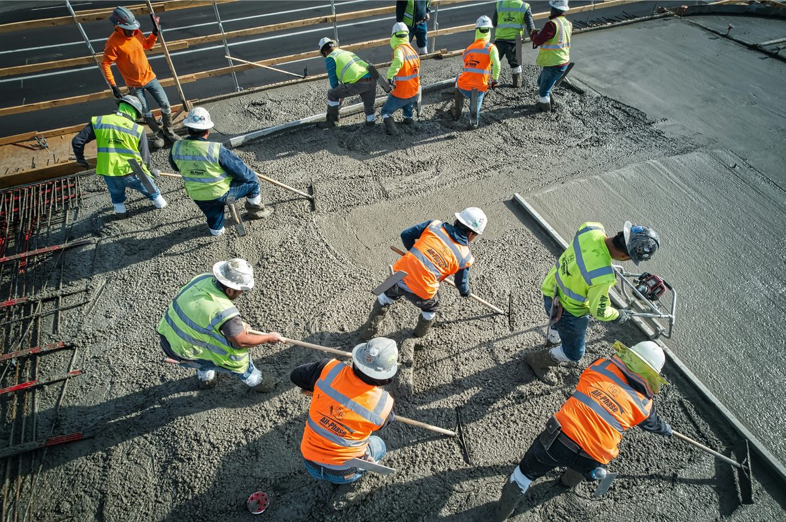
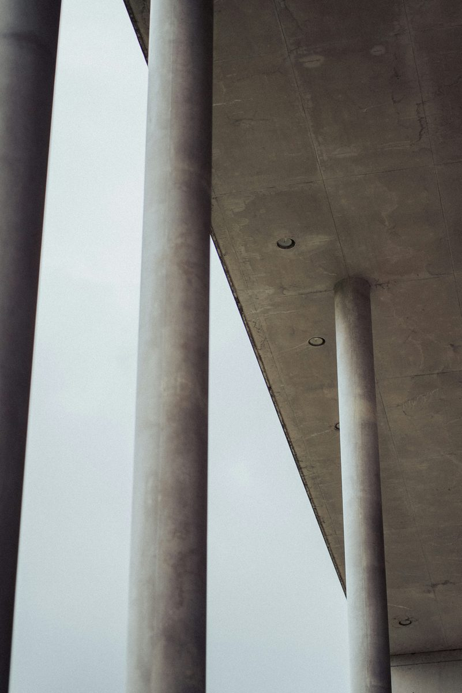
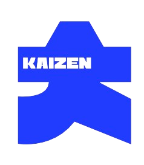
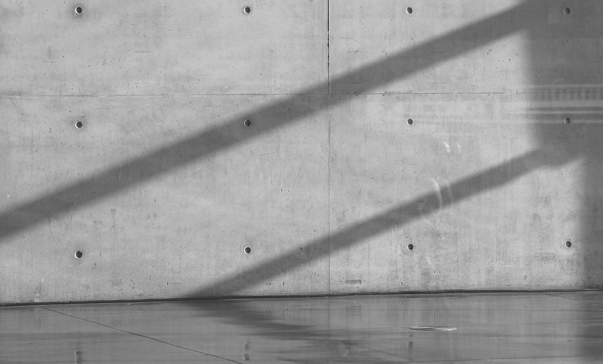

Nosotros

Brindamos soluciones que aportan
resistencia y funcionalidad
En KAIZEN® nos especializamos en la producción y suministro de concreto premezclado de alta calidad para proyectos residenciales, comerciales, industriales y de infraestructura.
Desarrollamos soluciones integrales que responden a las necesidades específicas de cada obra, desde rellenos fluidos, jalcreto y concretos convencionales, hasta mezclas especializadas.
Nuestras plantas automatizadas hacen que logremos_ Kaizen®
- Optimizar la precisión y consistencia de cada mezcla
- Incrementar la productividad
- Promover la sostenibilidad
- Fortalecer la competitividad en el mercado
Proyectos
-

-

Kaizen®
se destaca
por ofrecer

- Entregas puntuales y confiables
- Plantas automatizadas de alta precisión
- Soluciones especializadas para cada proyecto
- Asesoría técnica personalizada
- Concretos bombeables y de alto desempeño
- Calidad garantizada en cada entrega
- Certificación de CEMEX CPRO
Nuestro compromiso es garantizar la satisfacción de nuestros clientes, colaboradores e inversionistas.

En Kaizen® entendemos que una obra no puede detenerse.
Trabajamos para convertirnos en un aliado estratégico que ofrece soluciones de concreto diseñadas para cumplir con los tiempos, especificaciones y exigencias de cada proyecto.
Cotiza ahora